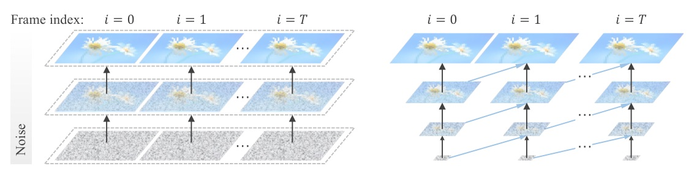
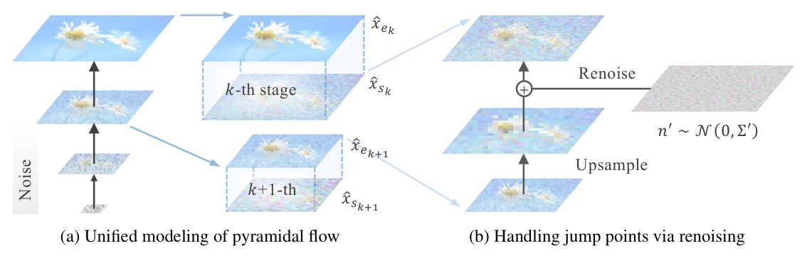
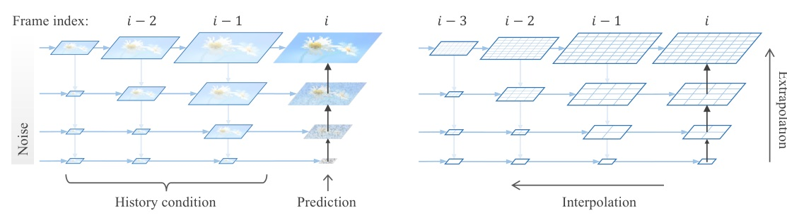
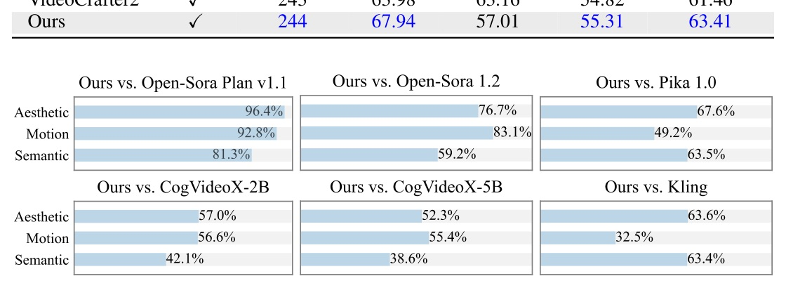
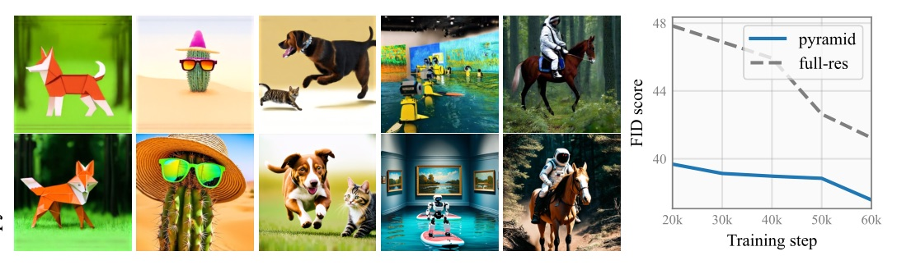
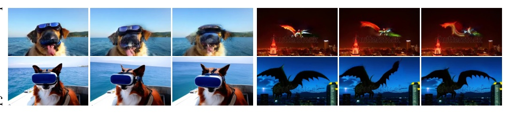
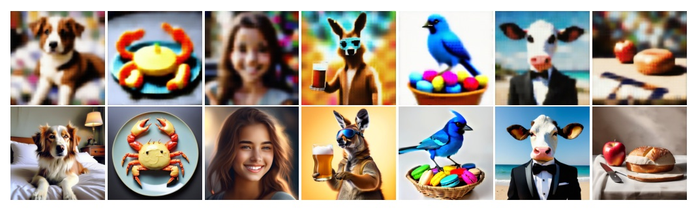
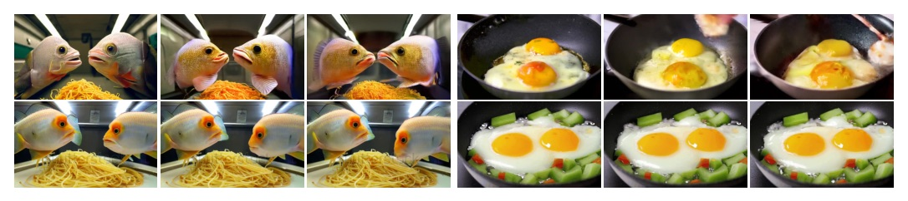
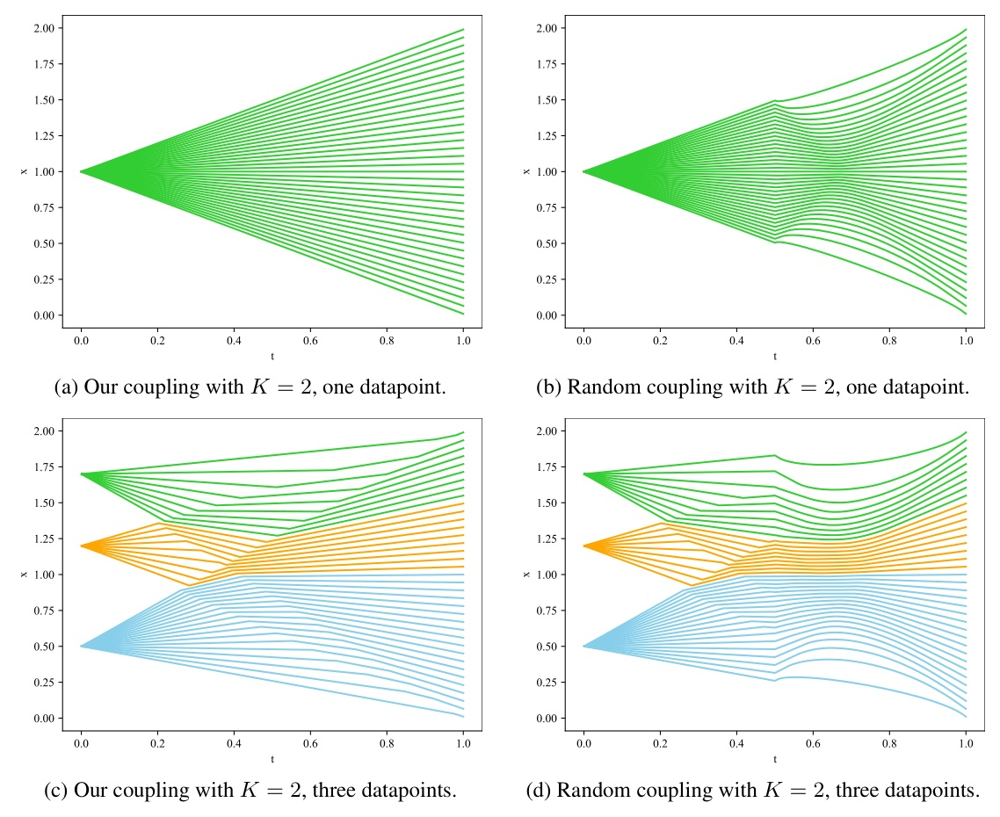

把高解析影片生成的 token 預算，從「全程全開」改成只在資訊密度最高的末段花。

今日 arXiv discovery API 回 429。
不把過期候選偽裝成今日新作；本份明確標示為 retrospective，選用 ICLR 2025、且與本週影片 / 時序主題乾淨對齊的完整論文。
Pyramid Flow 把跨解析度「生成 + 解壓」寫成同一條 flow。
空間上：早期 noisy step 留在低解析度。時間上：遠端 history 留在低解析度。單一 DiT 用 unified objective 共同學習。
例：10s、241-frame 影片；後者是論文的 pyramid token 上限。
作者的觀察：初期 latent 極 noisy、資訊低。先在壓縮 latent 演進，末段才補 full-resolution detail。


訓練時對 history 加小噪聲緩解 autoregressive error accumulation；推論使用 clean generated history。
| Model | Public | Total | Quality | Motion | Dynamic |
|---|---|---|---|---|---|
| Open-Sora 1.2 | yes | 79.76 | 81.35 | 98.50 | 42.39 |
| T2V-Turbo | yes | 81.01 | 82.57 | 97.34 | 49.17 |
| Pyramidal Flow | yes | 81.72 | 84.74 | 99.12 | 64.63 |
| Gen-3 Alpha | no | 82.32 | 84.11 | 99.23 | 60.14 |
| Model | Public | Final | Visual | T-V Align | Motion |
|---|---|---|---|---|---|
| VideoCrafter2 | yes | 243 | 63.98 | 63.16 | 54.82 |
| Pyramidal Flow | yes | 244 | 67.94 | 57.01 | 55.31 |
| Gen-2 | no | 254 | 69.09 | 63.92 | 55.59 |
作者將較低 semantic score 歸因於 coarse-grained synthetic captions，而非把它說成全面 SOTA。

50 prompts、20+ participants；相對 Open-Sora 1.2：semantic 59.2%、motion 83.1%、aesthetic 76.7%。
把 expensive compute 留給「已經有內容」的末段。
Spatial pyramid 把 early noisy denoising 壓縮；temporal pyramid 把遠端 history 壓縮。Unified flow 與 renoise 再保證這不是斷開的 cascade。

比較控制 data、batch token、hyperparameters、architecture；圖表未給可安全轉錄的逐點 FID，因此只陳述作者的「almost three times」結論。

作者報告 full-sequence variant 出現 fragmented visual details 與 incoherent motion；pyramid variant 有較佳 temporal consistency。



獨立端點取樣使方向隨機而容易交叉；coupled endpoints 形成較組織化、可能平行的 path。
“only the final stage operates at full resolution, drastically reducing redundant computations in earlier timesteps.”
「只有最後一個 stage 使用 full resolution，因此早期 timestep 的冗餘計算被大幅移除。」§1 p.2
“the temporal pyramid designs to improve training efficiency can sometimes lead to subtle subject inconsistency, especially over the long term.”
「為了效率的 temporal pyramid，長時間下有時會帶來細微主體不一致。」Limitations p.23
在 token 成本真正爆炸前，先決定哪一段訊息值得 full resolution。